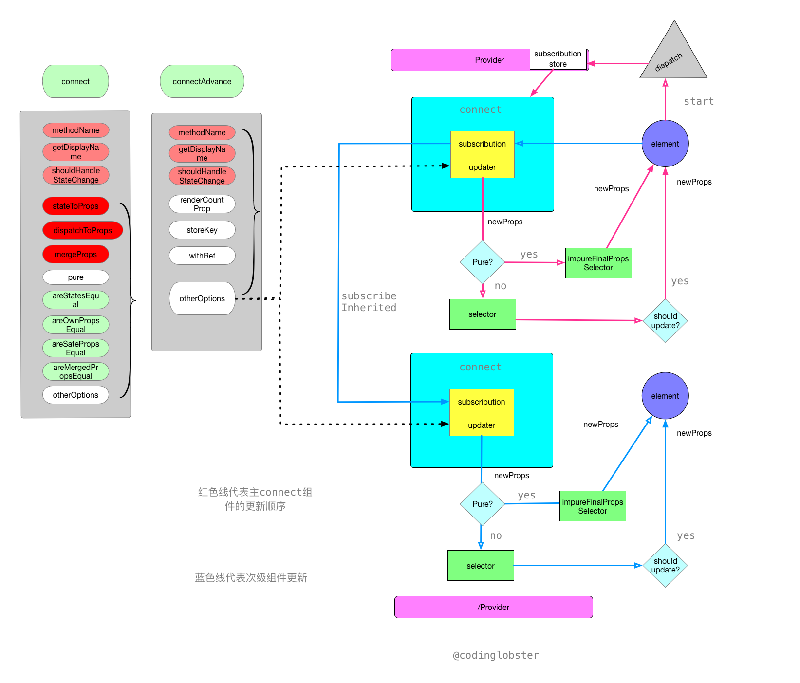
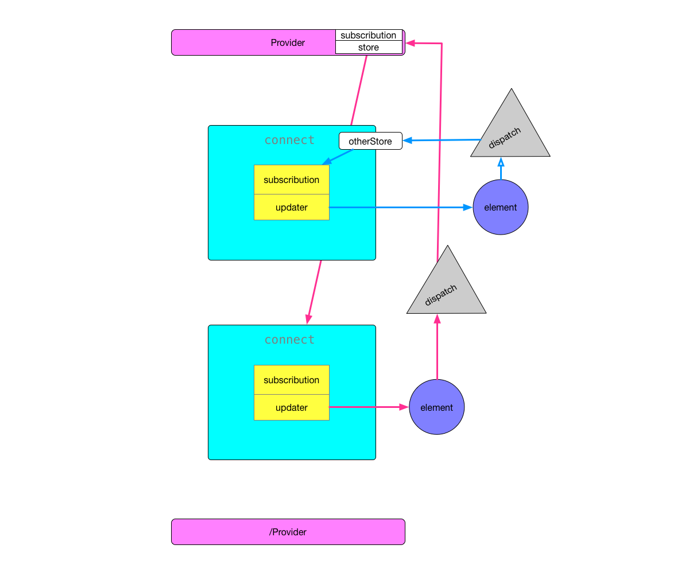

<!DOCTYPE html>
<html lang="en">

<!-- Head tag -->
<head><meta name="generator" content="Hexo 3.8.0">
    <meta charset="utf-8">
    <meta http-equiv="X-UA-Compatible" content="IE=edge">
    <meta name="google-site-verification" content="xBT4GhYoi5qRD5tr338pgPM5OWHHIDR6mNg1a3euekI">
    <meta name="viewport" content="width=device-width, initial-scale=1">
    <meta name="description" content>
    <meta name="keyword" content>
    <link rel="shortcut icon" href="/codinglobster-blog/img/favicon.ico">

    <title>
        
          react-redux-source-code-read - Jeff的博客 | Jeff&#39;s Blog
        
    </title>

    <link rel="canonical" href="https://codinglobster.github.io/codinglobster-blog/2018/07/03/react-redux-source-code-read/">

    <!-- Bootstrap Core CSS -->
    <link rel="stylesheet" href="/codinglobster-blog/css/bootstrap.min.css">

    <!-- Custom CSS -->
    <link rel="stylesheet" href="/codinglobster-blog/css/hux-blog.min.css">

    <!-- Pygments Highlight CSS -->
    <link rel="stylesheet" href="/codinglobster-blog/css/highlight.css">

    <!-- Custom Fonts -->
    <!-- <link href="https://maxcdn.bootstrapcdn.com/font-awesome/4.3.0/css/font-awesome.min.css" rel="stylesheet" type="text/css"> -->
    <!-- Hux change font-awesome CDN to qiniu -->
    <link href="https://cdn.staticfile.org/font-awesome/4.5.0/css/font-awesome.min.css" rel="stylesheet" type="text/css">


    <!-- Hux Delete, sad but pending in China
    <link href='http://fonts.googleapis.com/css?family=Lora:400,700,400italic,700italic' rel='stylesheet' type='text/css'>
    <link href='http://fonts.googleapis.com/css?family=Open+Sans:300italic,400italic,600italic,700italic,800italic,400,300,600,700,800' rel='stylesheet' type='text/
    css'>
    -->


    <!-- HTML5 Shim and Respond.js IE8 support of HTML5 elements and media queries -->
    <!-- WARNING: Respond.js doesn't work if you view the page via file:// -->
    <!--[if lt IE 9]>
        <script src="https://oss.maxcdn.com/libs/html5shiv/3.7.0/html5shiv.js"></script>
        <script src="https://oss.maxcdn.com/libs/respond.js/1.4.2/respond.min.js"></script>
    <![endif]-->

    <!-- ga & ba script hoook -->
    <script></script>
</head>


<!-- hack iOS CSS :active style -->
<body ontouchstart="">

    <!-- Navigation -->
<nav class="navbar navbar-default navbar-custom navbar-fixed-top">
    <div class="container-fluid">
        <!-- Brand and toggle get grouped for better mobile display -->
        <div class="navbar-header page-scroll">
            <button type="button" class="navbar-toggle">
                <span class="sr-only">Toggle navigation</span>
                <span class="icon-bar"></span>
                <span class="icon-bar"></span>
                <span class="icon-bar"></span>
            </button>
            <a class="navbar-brand" href="/codinglobster-blog/">codinglobster&#39;s Blog</a>
        </div>

        <!-- Collect the nav links, forms, and other content for toggling -->
        <!-- Known Issue, found by Hux:
            <nav>'s height woule be hold on by its content.
            so, when navbar scale out, the <nav> will cover tags.
            also mask any touch event of tags, unfortunately.
        -->
        <div id="huxblog_navbar">
            <div class="navbar-collapse">
                <ul class="nav navbar-nav navbar-right">
                    <li>
                        <a href="/codinglobster-blog/">Home</a>
                    </li>

                    

                        
                    

                        
                        <li>
                            <a href="/codinglobster-blog/about/">About</a>
                        </li>
                        
                    

                        
                        <li>
                            <a href="/codinglobster-blog/archives/">Archives</a>
                        </li>
                        
                    

                        
                        <li>
                            <a href="/codinglobster-blog/tags/">Tags</a>
                        </li>
                        
                    
                    
                </ul>
            </div>
        </div>
        <!-- /.navbar-collapse -->
    </div>
    <!-- /.container -->
</nav>
<script>
    // Drop Bootstarp low-performance Navbar
    // Use customize navbar with high-quality material design animation
    // in high-perf jank-free CSS3 implementation
    var $body   = document.body;
    var $toggle = document.querySelector('.navbar-toggle');
    var $navbar = document.querySelector('#huxblog_navbar');
    var $collapse = document.querySelector('.navbar-collapse');

    $toggle.addEventListener('click', handleMagic)
    function handleMagic(e){
        if ($navbar.className.indexOf('in') > 0) {
        // CLOSE
            $navbar.className = " ";
            // wait until animation end.
            setTimeout(function(){
                // prevent frequently toggle
                if($navbar.className.indexOf('in') < 0) {
                    $collapse.style.height = "0px"
                }
            },400)
        }else{
        // OPEN
            $collapse.style.height = "auto"
            $navbar.className += " in";
        }
    }
</script>


    <!-- Main Content -->
    
<!-- Image to hack wechat -->
<!--  -->
<!--  -->

<!-- Post Header -->
<style type="text/css">
    header.intro-header{
        background-image: url('reactjs.png')
    }
</style>
<header class="intro-header">
    <div class="container">
        <div class="row">
            <div class="col-lg-8 col-lg-offset-2 col-md-10 col-md-offset-1">
                <div class="post-heading">
                    <div class="tags">
                        
                          <a class="tag" href="/codinglobster-blog/tags/#react" title="react">react</a>
                        
                          <a class="tag" href="/codinglobster-blog/tags/#redux" title="redux">redux</a>
                        
                    </div>
                    <h1>react-redux-source-code-read</h1>
                    <h2 class="subheading">react-redux源码试探阅读</h2>
                    <span class="meta">
                        Posted by codinglobster on
                        2018-07-03
                    </span>
                </div>
            </div>
        </div>
    </div>
</header>

<!-- Post Content -->
<article>
    <div class="container">
        <div class="row">

    <!-- Post Container -->
            <div class="
                col-lg-8 col-lg-offset-2
                col-md-10 col-md-offset-1
                post-container">

                <h1 id="Redux-react源码解析"><a href="#Redux-react源码解析" class="headerlink" title="Redux-react源码解析"></a>Redux-react源码解析</h1><p>react提供了view层的依据数据刷新，redux提供了可追溯的数据流体系，但是如何将两者很好的整合起来呢？</p>
<blockquote>
<p>react-redux，通过connect来连接组件和store</p>
</blockquote>
<h2 id="订阅流程图"><a href="#订阅流程图" class="headerlink" title="订阅流程图"></a>订阅流程图</h2><p><br>修改浏览器缩放率可以查看大图。</p>
<h2 id="从Provider开始"><a href="#从Provider开始" class="headerlink" title="从Provider开始"></a>从Provider开始</h2><p>Provider组件十分简单，接受参数store，并将store作为上下文内容进行广播。</p>
<figure class="highlight js"><table><tr><td class="gutter"><pre><span class="line">1</span><br><span class="line">2</span><br><span class="line">3</span><br><span class="line">4</span><br><span class="line">5</span><br><span class="line">6</span><br><span class="line">7</span><br><span class="line">8</span><br></pre></td><td class="code"><pre><span class="line">Provider.propTypes = &#123;</span><br><span class="line">    store: storeShape.isRequired,</span><br><span class="line">    children: PropTypes.element.isRequired,</span><br><span class="line">&#125;</span><br><span class="line">Provider.childContextTypes = &#123;</span><br><span class="line">    [storeKey]: storeShape.isRequired,</span><br><span class="line">    [subscriptionKey]: subscriptionShape,</span><br><span class="line">&#125;</span><br></pre></td></tr></table></figure>
<p>可以看到provider必须是有子组件的，不然它将没有任何意义。<br>同时它会广播subscription，但是值为Null,是为了区分subcription来源做的hack处理。</p>
<h2 id="Connet方法"><a href="#Connet方法" class="headerlink" title="Connet方法"></a>Connet方法</h2><p>connect</p>
<figure class="highlight js"><table><tr><td class="gutter"><pre><span class="line">1</span><br><span class="line">2</span><br><span class="line">3</span><br><span class="line">4</span><br><span class="line">5</span><br><span class="line">6</span><br><span class="line">7</span><br><span class="line">8</span><br><span class="line">9</span><br><span class="line">10</span><br><span class="line">11</span><br><span class="line">12</span><br><span class="line">13</span><br><span class="line">14</span><br><span class="line">15</span><br><span class="line">16</span><br><span class="line">17</span><br><span class="line">18</span><br><span class="line">19</span><br><span class="line">20</span><br><span class="line">21</span><br><span class="line">22</span><br><span class="line">23</span><br><span class="line">24</span><br><span class="line">25</span><br><span class="line">26</span><br><span class="line">27</span><br><span class="line">28</span><br><span class="line">29</span><br><span class="line">30</span><br><span class="line">31</span><br><span class="line">32</span><br><span class="line">33</span><br><span class="line">34</span><br><span class="line">35</span><br></pre></td><td class="code"><pre><span class="line">connect(</span><br><span class="line">    mapStateToProps</span><br><span class="line">    mapDispatchToProps</span><br><span class="line">    mergeProps</span><br><span class="line">    &#123;</span><br><span class="line">        ======== 默认参数 ========</span><br><span class="line">        pure = <span class="literal">true</span>,</span><br><span class="line">        areStatesEqual = strictEqual,</span><br><span class="line">        areOwnPropsEqual = shallowEqual,</span><br><span class="line">        areStatePropsEqual = shallowEqual,</span><br><span class="line">        areMergedPropsEqual = shallowEqual,</span><br><span class="line">        =========================</span><br><span class="line">        ...extraOptions <span class="comment">// 可以覆盖connect的参数，也可以覆盖connectHOC的参数</span></span><br><span class="line">    &#125;</span><br><span class="line"></span><br><span class="line">    <span class="keyword">return</span> connectAdvance(props)</span><br><span class="line"></span><br><span class="line">)</span><br><span class="line"></span><br><span class="line"><span class="string">``</span><span class="string">`   </span></span><br><span class="line"><span class="string"></span></span><br><span class="line"><span class="string">connect方法接收了三个主要函数用来描述组件与store之间的数据依赖，并进行了验证处理，保证三个传入参数符合要求。</span></span><br><span class="line"><span class="string">connect方法可以说是connectAdvance的简单配置版，默认提供了大部分selectorFactory需要的参数。</span></span><br><span class="line"><span class="string"></span></span><br><span class="line"><span class="string">### mapStateToProps</span></span><br><span class="line"><span class="string"></span></span><br><span class="line"><span class="string">描述了组件与state之间的依赖，即需要哪些state中的属性</span></span><br><span class="line"><span class="string">接受两个参数，state, ownProps</span></span><br><span class="line"><span class="string"></span></span><br><span class="line"><span class="string">`</span><span class="string">``</span> js</span><br><span class="line"><span class="keyword">const</span> mapStateToProps = <span class="function">(<span class="params">state</span>) =&gt;</span> &#123;</span><br><span class="line">  <span class="keyword">return</span> &#123;</span><br><span class="line">    todos: getVisibleTodos(state.todos, state.visibilityFilter)</span><br><span class="line">  &#125;</span><br><span class="line">&#125;</span><br></pre></td></tr></table></figure>
<h3 id="mapDispatchToProps"><a href="#mapDispatchToProps" class="headerlink" title="mapDispatchToProps"></a>mapDispatchToProps</h3><p>接受两个参数（dispath,和ownProps）<br>为组件的props上添加预设好的dispath-action<br><figure class="highlight js"><table><tr><td class="gutter"><pre><span class="line">1</span><br><span class="line">2</span><br><span class="line">3</span><br><span class="line">4</span><br><span class="line">5</span><br><span class="line">6</span><br><span class="line">7</span><br><span class="line">8</span><br><span class="line">9</span><br><span class="line">10</span><br><span class="line">11</span><br><span class="line">12</span><br><span class="line">13</span><br></pre></td><td class="code"><pre><span class="line"><span class="keyword">const</span> mapDispatchToProps = (</span><br><span class="line">  dispatch,</span><br><span class="line">  ownProps</span><br><span class="line">) =&gt; &#123;</span><br><span class="line">  <span class="keyword">return</span> &#123;</span><br><span class="line">    onClick: <span class="function"><span class="params">()</span> =&gt;</span> &#123;</span><br><span class="line">      dispatch(&#123;</span><br><span class="line">        type: <span class="string">'SET_VISIBILITY_FILTER'</span>,</span><br><span class="line">        filter: ownProps.filter</span><br><span class="line">      &#125;);</span><br><span class="line">    &#125;</span><br><span class="line">  &#125;;</span><br><span class="line">&#125;</span><br></pre></td></tr></table></figure></p>
<p>如果传入了这个参数，那么我们就可以在组件中使用<code>this.props.onClick()</code>就可以派发一个已经组装的好的action</p>
<h3 id="mergeProps"><a href="#mergeProps" class="headerlink" title="mergeProps"></a>mergeProps</h3><p>接受三个参数（<code>stateProps, dispatchProps, ownProps</code>）<br>描述了计算后的state,dispatchProps,和之前的props是如何组合起来的<br>默认的组合方式是浅拷贝三个数据，并组成一个新的对象，即<code>{...stateProps, ...dispatchProps, ...ownProps}</code></p>
<h3 id="比对等级"><a href="#比对等级" class="headerlink" title="比对等级"></a>比对等级</h3><p>默认的state比较是采用严格对比，也就是 <code>a === b</code>,<br>而其它属性则使用了浅比较。<br>只比较了OwnProperty相等即可。<br><figure class="highlight js"><table><tr><td class="gutter"><pre><span class="line">1</span><br><span class="line">2</span><br><span class="line">3</span><br><span class="line">4</span><br><span class="line">5</span><br><span class="line">6</span><br><span class="line">7</span><br><span class="line">8</span><br><span class="line">9</span><br><span class="line">10</span><br><span class="line">11</span><br><span class="line">12</span><br><span class="line">13</span><br><span class="line">14</span><br><span class="line">15</span><br><span class="line">16</span><br><span class="line">17</span><br><span class="line">18</span><br><span class="line">19</span><br><span class="line">20</span><br><span class="line">21</span><br><span class="line">22</span><br><span class="line">23</span><br><span class="line">24</span><br><span class="line">25</span><br><span class="line">26</span><br><span class="line">27</span><br><span class="line">28</span><br><span class="line">29</span><br><span class="line">30</span><br><span class="line">31</span><br><span class="line">32</span><br></pre></td><td class="code"><pre><span class="line"><span class="keyword">const</span> hasOwn = <span class="built_in">Object</span>.prototype.hasOwnProperty</span><br><span class="line"></span><br><span class="line"><span class="function"><span class="keyword">function</span> <span class="title">is</span>(<span class="params">x, y</span>) </span>&#123;</span><br><span class="line">  <span class="keyword">if</span> (x === y) &#123;</span><br><span class="line">    <span class="keyword">return</span> x !== <span class="number">0</span> || y !== <span class="number">0</span> || <span class="number">1</span> / x === <span class="number">1</span> / y</span><br><span class="line">  &#125; <span class="keyword">else</span> &#123;</span><br><span class="line">    <span class="keyword">return</span> x !== x &amp;&amp; y !== y</span><br><span class="line">  &#125;</span><br><span class="line">&#125;</span><br><span class="line"></span><br><span class="line"><span class="keyword">export</span> <span class="keyword">default</span> <span class="function"><span class="keyword">function</span> <span class="title">shallowEqual</span>(<span class="params">objA, objB</span>) </span>&#123;</span><br><span class="line">  <span class="keyword">if</span> (is(objA, objB)) <span class="keyword">return</span> <span class="literal">true</span></span><br><span class="line"></span><br><span class="line">  <span class="keyword">if</span> (<span class="keyword">typeof</span> objA !== <span class="string">'object'</span> || objA === <span class="literal">null</span> ||</span><br><span class="line">      <span class="keyword">typeof</span> objB !== <span class="string">'object'</span> || objB === <span class="literal">null</span>) &#123;</span><br><span class="line">    <span class="keyword">return</span> <span class="literal">false</span></span><br><span class="line">  &#125;</span><br><span class="line"></span><br><span class="line">  <span class="keyword">const</span> keysA = <span class="built_in">Object</span>.keys(objA)</span><br><span class="line">  <span class="keyword">const</span> keysB = <span class="built_in">Object</span>.keys(objB)</span><br><span class="line"></span><br><span class="line">  <span class="keyword">if</span> (keysA.length !== keysB.length) <span class="keyword">return</span> <span class="literal">false</span></span><br><span class="line"></span><br><span class="line">  <span class="keyword">for</span> (<span class="keyword">let</span> i = <span class="number">0</span>; i &lt; keysA.length; i++) &#123;</span><br><span class="line">    <span class="keyword">if</span> (!hasOwn.call(objB, keysA[i]) ||</span><br><span class="line">        !is(objA[keysA[i]], objB[keysA[i]])) &#123;</span><br><span class="line">      <span class="keyword">return</span> <span class="literal">false</span></span><br><span class="line">    &#125;</span><br><span class="line">  &#125;</span><br><span class="line"></span><br><span class="line">  <span class="keyword">return</span> <span class="literal">true</span></span><br><span class="line">&#125;</span><br></pre></td></tr></table></figure></p>
<h2 id="ConnectAdvance"><a href="#ConnectAdvance" class="headerlink" title="ConnectAdvance"></a>ConnectAdvance</h2><figure class="highlight js"><table><tr><td class="gutter"><pre><span class="line">1</span><br><span class="line">2</span><br><span class="line">3</span><br><span class="line">4</span><br><span class="line">5</span><br><span class="line">6</span><br><span class="line">7</span><br><span class="line">8</span><br><span class="line">9</span><br><span class="line">10</span><br><span class="line">11</span><br><span class="line">12</span><br><span class="line">13</span><br><span class="line">14</span><br><span class="line">15</span><br><span class="line">16</span><br></pre></td><td class="code"><pre><span class="line">connectAdvanced(</span><br><span class="line">    selectorFactory,(connect提供)</span><br><span class="line">  &#123;</span><br><span class="line">    ...options</span><br><span class="line">  &#125;</span><br><span class="line">)&#123;</span><br><span class="line">  retrun wrapWithConnect（WrappedComponent）&#123;</span><br><span class="line">    <span class="class"><span class="keyword">class</span> <span class="title">connect</span> <span class="keyword">extends</span> <span class="title">React</span>.<span class="title">Component</span> </span>&#123;</span><br><span class="line">      ...</span><br><span class="line">      render(</span><br><span class="line">        &lt;wrapWithConnect &#123;...props&#125; /&gt;</span><br><span class="line">      )</span><br><span class="line">    &#125;</span><br><span class="line">    <span class="keyword">return</span> connect</span><br><span class="line">  &#125;</span><br><span class="line">&#125;</span><br></pre></td></tr></table></figure>
<p>ConnectAdvance会根据传入参数返回wrap方法，这个方法接收一个element组件。最终再返回一个普通的connect组件用来管理订阅和更新。</p>
<h2 id="订阅的实现：subscribution"><a href="#订阅的实现：subscribution" class="headerlink" title="订阅的实现：subscribution"></a>订阅的实现：subscribution</h2><p>在返回的connect组件中，在初始化的过程中会初始化两个对象，updater和subsciption<br><figure class="highlight js"><table><tr><td class="gutter"><pre><span class="line">1</span><br><span class="line">2</span><br><span class="line">3</span><br><span class="line">4</span><br><span class="line">5</span><br><span class="line">6</span><br><span class="line">7</span><br><span class="line">8</span><br><span class="line">9</span><br></pre></td><td class="code"><pre><span class="line"><span class="keyword">constructor</span>(props, context) &#123;</span><br><span class="line"></span><br><span class="line">  ...</span><br><span class="line"></span><br><span class="line">  <span class="keyword">this</span>.state = &#123;</span><br><span class="line">    updater: <span class="keyword">this</span>.createUpdater() <span class="comment">// 初始化updater，下面会讲</span></span><br><span class="line">  &#125;</span><br><span class="line">  <span class="keyword">this</span>.initSubscription() <span class="comment">// 初始化订阅</span></span><br><span class="line">&#125;</span><br></pre></td></tr></table></figure></p>
<p>下面来看一看subscription的实现<br><figure class="highlight js"><table><tr><td class="gutter"><pre><span class="line">1</span><br><span class="line">2</span><br><span class="line">3</span><br><span class="line">4</span><br><span class="line">5</span><br><span class="line">6</span><br><span class="line">7</span><br></pre></td><td class="code"><pre><span class="line">initSubscription() &#123;</span><br><span class="line">  <span class="keyword">if</span> (!shouldHandleStateChanges) <span class="keyword">return</span> <span class="comment">// 没有mapsToProps则代表不需要监听，直接取消订阅，updater也就失去了意义</span></span><br><span class="line">  <span class="keyword">const</span> parentSub = (<span class="keyword">this</span>.propsMode ? <span class="keyword">this</span>.props : <span class="keyword">this</span>.context)[subscriptionKey] <span class="comment">// 如果父级已经有订阅，则直接订阅父级，从而实现父级刷新再刷新子级的逻辑</span></span><br><span class="line">  <span class="keyword">this</span>.subscription = <span class="keyword">new</span> Subscription(<span class="keyword">this</span>.store, parentSub, <span class="keyword">this</span>.onStateChange.bind(<span class="keyword">this</span>))</span><br><span class="line">  <span class="comment">// hack处理，因为订阅派发的过程可能会出现组件卸载的情况，所以，卸载前将订阅清空是必须的</span></span><br><span class="line">  <span class="keyword">this</span>.notifyNestedSubs = <span class="keyword">this</span>.subscription.notifyNestedSubs.bind(<span class="keyword">this</span>.subscription)</span><br><span class="line">&#125;</span><br></pre></td></tr></table></figure></p>
<p>订阅类长什么样？<br><figure class="highlight js"><table><tr><td class="gutter"><pre><span class="line">1</span><br><span class="line">2</span><br><span class="line">3</span><br><span class="line">4</span><br><span class="line">5</span><br><span class="line">6</span><br><span class="line">7</span><br><span class="line">8</span><br><span class="line">9</span><br><span class="line">10</span><br><span class="line">11</span><br><span class="line">12</span><br><span class="line">13</span><br><span class="line">14</span><br><span class="line">15</span><br><span class="line">16</span><br><span class="line">17</span><br><span class="line">18</span><br><span class="line">19</span><br><span class="line">20</span><br><span class="line">21</span><br><span class="line">22</span><br><span class="line">23</span><br><span class="line">24</span><br><span class="line">25</span><br><span class="line">26</span><br><span class="line">27</span><br><span class="line">28</span><br><span class="line">29</span><br><span class="line">30</span><br><span class="line">31</span><br><span class="line">32</span><br><span class="line">33</span><br><span class="line">34</span><br><span class="line">35</span><br><span class="line">36</span><br><span class="line">37</span><br><span class="line">38</span><br><span class="line">39</span><br><span class="line">40</span><br><span class="line">41</span><br></pre></td><td class="code"><pre><span class="line"><span class="keyword">export</span> <span class="keyword">default</span> <span class="class"><span class="keyword">class</span> <span class="title">Subscription</span> </span>&#123;</span><br><span class="line">  <span class="keyword">constructor</span>(store, parentSub, onStateChange) &#123;</span><br><span class="line">    <span class="keyword">this</span>.store = store</span><br><span class="line">    <span class="keyword">this</span>.parentSub = parentSub</span><br><span class="line">    <span class="keyword">this</span>.onStateChange = onStateChange</span><br><span class="line">    <span class="keyword">this</span>.unsubscribe = <span class="literal">null</span></span><br><span class="line">    <span class="keyword">this</span>.listeners = nullListeners</span><br><span class="line">  &#125;</span><br><span class="line"></span><br><span class="line">  addNestedSub(listener) &#123;</span><br><span class="line">    <span class="keyword">this</span>.trySubscribe()</span><br><span class="line">    <span class="keyword">return</span> <span class="keyword">this</span>.listeners.subscribe(listener)</span><br><span class="line">  &#125;</span><br><span class="line"></span><br><span class="line">  notifyNestedSubs() &#123;</span><br><span class="line">    <span class="keyword">this</span>.listeners.notify()</span><br><span class="line">  &#125;</span><br><span class="line"></span><br><span class="line">  isSubscribed() &#123;</span><br><span class="line">    <span class="keyword">return</span> <span class="built_in">Boolean</span>(<span class="keyword">this</span>.unsubscribe)</span><br><span class="line">  &#125;</span><br><span class="line"></span><br><span class="line">  trySubscribe() &#123;</span><br><span class="line">    <span class="keyword">if</span> (!<span class="keyword">this</span>.unsubscribe) &#123;</span><br><span class="line">      <span class="keyword">this</span>.unsubscribe = <span class="keyword">this</span>.parentSub</span><br><span class="line">        ? <span class="keyword">this</span>.parentSub.addNestedSub(<span class="keyword">this</span>.onStateChange)</span><br><span class="line">        : <span class="keyword">this</span>.store.subscribe(<span class="keyword">this</span>.onStateChange)</span><br><span class="line"> </span><br><span class="line">      <span class="keyword">this</span>.listeners = createListenerCollection()</span><br><span class="line">    &#125;</span><br><span class="line">  &#125;</span><br><span class="line"></span><br><span class="line">  tryUnsubscribe() &#123;</span><br><span class="line">    <span class="keyword">if</span> (<span class="keyword">this</span>.unsubscribe) &#123;</span><br><span class="line">      <span class="keyword">this</span>.unsubscribe()</span><br><span class="line">      <span class="keyword">this</span>.unsubscribe = <span class="literal">null</span></span><br><span class="line">      <span class="keyword">this</span>.listeners.clear()</span><br><span class="line">      <span class="keyword">this</span>.listeners = nullListeners</span><br><span class="line">    &#125;</span><br><span class="line">  &#125;</span><br><span class="line">&#125;</span><br></pre></td></tr></table></figure></p>
<p>可以看到订阅类实现了类似redux的订阅体系，但是要更复杂，订阅不仅要去<code>store</code>订阅<code>onStateChange</code>函数，还要管理可能存在的子组件订阅，可以看到实现的核心是<code>trySubscribe</code>，分两种情况去管理订阅。如果有<code>parentSub</code>，则将<code>onStateChange</code>注册到父级的listeners中，没有则直接在<code>store</code>中subscribe。</p>
<p>那么问题又来了，什么时候开始订阅？以及<code>onStateChange</code>函数到底干了什么？<br><figure class="highlight js"><table><tr><td class="gutter"><pre><span class="line">1</span><br><span class="line">2</span><br><span class="line">3</span><br><span class="line">4</span><br><span class="line">5</span><br><span class="line">6</span><br><span class="line">7</span><br><span class="line">8</span><br><span class="line">9</span><br></pre></td><td class="code"><pre><span class="line">componentDidMount() &#123;</span><br><span class="line"> <span class="keyword">if</span> (!shouldHandleStateChanges) <span class="keyword">return</span></span><br><span class="line"> <span class="keyword">this</span>.subscription.trySubscribe()</span><br><span class="line"> <span class="keyword">this</span>.runUpdater()</span><br><span class="line">&#125;</span><br><span class="line"></span><br><span class="line">onStateChange() &#123;</span><br><span class="line">  <span class="keyword">this</span>.runUpdater(<span class="keyword">this</span>.notifyNestedSubs)</span><br><span class="line">&#125;</span><br></pre></td></tr></table></figure></p>
<p>在组件加载完成后，组件开始了订阅，并且进行了一次手动更新。<br>而<code>onStateChange</code>则是将子组件的订阅作为回调传入<code>runUpdater</code></p>
<p>所以<code>runUpdater</code>又干了什么？<br><figure class="highlight js"><table><tr><td class="gutter"><pre><span class="line">1</span><br><span class="line">2</span><br><span class="line">3</span><br><span class="line">4</span><br><span class="line">5</span><br><span class="line">6</span><br></pre></td><td class="code"><pre><span class="line">runUpdater(callback = noop) &#123;</span><br><span class="line">  <span class="keyword">if</span> (<span class="keyword">this</span>.isUnmounted) &#123;</span><br><span class="line">    <span class="keyword">return</span></span><br><span class="line">  &#125;</span><br><span class="line">  <span class="keyword">this</span>.setState(<span class="function"><span class="params">prevState</span> =&gt;</span> prevState.updater(<span class="keyword">this</span>.props, prevState), callback)</span><br><span class="line">&#125;</span><br></pre></td></tr></table></figure></p>
<p>刷新的关键就在这里，通过setState,我们将通过<code>Updater</code>计算的结果传入，从而进行更新，并在更新完成之后再进行子组件的更新。</p>
<h2 id="更新的实现：updater-amp-SelectFactory"><a href="#更新的实现：updater-amp-SelectFactory" class="headerlink" title="更新的实现：updater &amp; SelectFactory"></a>更新的实现：updater &amp; SelectFactory</h2><p>上一节我们看到，在组件初始化的时候，我们注册了Updater，那么他是怎么实现的呢？<br><figure class="highlight js"><table><tr><td class="gutter"><pre><span class="line">1</span><br><span class="line">2</span><br><span class="line">3</span><br><span class="line">4</span><br><span class="line">5</span><br><span class="line">6</span><br><span class="line">7</span><br><span class="line">8</span><br><span class="line">9</span><br><span class="line">10</span><br><span class="line">11</span><br><span class="line">12</span><br><span class="line">13</span><br><span class="line">14</span><br><span class="line">15</span><br><span class="line">16</span><br><span class="line">17</span><br><span class="line">18</span><br><span class="line">19</span><br><span class="line">20</span><br><span class="line">21</span><br><span class="line">22</span><br><span class="line">23</span><br><span class="line">24</span><br><span class="line">25</span><br><span class="line">26</span><br><span class="line">27</span><br></pre></td><td class="code"><pre><span class="line">createUpdater() &#123;</span><br><span class="line">  <span class="keyword">const</span> sourceSelector = selectorFactory(<span class="keyword">this</span>.store.dispatch, selectorFactoryOptions)</span><br><span class="line">  <span class="keyword">return</span> makeUpdater(sourceSelector, <span class="keyword">this</span>.store)</span><br><span class="line">&#125;</span><br><span class="line"><span class="comment">// 这个是组件外部封装的方法</span></span><br><span class="line"><span class="function"><span class="keyword">function</span> <span class="title">makeUpdater</span>(<span class="params">sourceSelector, store</span>) </span>&#123;</span><br><span class="line">  <span class="keyword">return</span> <span class="function"><span class="keyword">function</span> <span class="title">updater</span>(<span class="params">props, prevState</span>) </span>&#123;</span><br><span class="line">    <span class="keyword">try</span> &#123;</span><br><span class="line">      <span class="keyword">const</span> nextProps = sourceSelector(store.getState(), props)</span><br><span class="line">      <span class="keyword">if</span> (nextProps !== prevState.props || prevState.error) &#123;</span><br><span class="line">        <span class="keyword">return</span> &#123;</span><br><span class="line">          shouldComponentUpdate: <span class="literal">true</span>,</span><br><span class="line">          props: nextProps,</span><br><span class="line">          error: <span class="literal">null</span>,</span><br><span class="line">        &#125;</span><br><span class="line">      &#125;</span><br><span class="line">      <span class="keyword">return</span> &#123;</span><br><span class="line">        shouldComponentUpdate: <span class="literal">false</span>,</span><br><span class="line">      &#125;</span><br><span class="line">    &#125; <span class="keyword">catch</span> (error) &#123;</span><br><span class="line">      <span class="keyword">return</span> &#123;</span><br><span class="line">        shouldComponentUpdate: <span class="literal">true</span>,</span><br><span class="line">        error,</span><br><span class="line">      &#125;</span><br><span class="line">    &#125;</span><br><span class="line">  &#125;</span><br><span class="line">&#125;</span><br></pre></td></tr></table></figure></p>
<figure class="highlight js"><table><tr><td class="gutter"><pre><span class="line">1</span><br><span class="line">2</span><br><span class="line">3</span><br><span class="line">4</span><br><span class="line">5</span><br><span class="line">6</span><br><span class="line">7</span><br><span class="line">8</span><br><span class="line">9</span><br><span class="line">10</span><br><span class="line">11</span><br><span class="line">12</span><br><span class="line">13</span><br><span class="line">14</span><br><span class="line">15</span><br><span class="line">16</span><br><span class="line">17</span><br><span class="line">18</span><br><span class="line">19</span><br><span class="line">20</span><br><span class="line">21</span><br><span class="line">22</span><br><span class="line">23</span><br><span class="line">24</span><br><span class="line">25</span><br><span class="line">26</span><br></pre></td><td class="code"><pre><span class="line"><span class="keyword">export</span> <span class="keyword">default</span> <span class="function"><span class="keyword">function</span> <span class="title">finalPropsSelectorFactory</span>(<span class="params">dispatch, &#123;</span></span></span><br><span class="line"><span class="function"><span class="params">  initMapStateToProps,</span></span></span><br><span class="line"><span class="function"><span class="params">  initMapDispatchToProps,</span></span></span><br><span class="line"><span class="function"><span class="params">  initMergeProps,</span></span></span><br><span class="line"><span class="function"><span class="params">  ...options</span></span></span><br><span class="line"><span class="function"><span class="params">&#125;</span>) </span>&#123;</span><br><span class="line">  <span class="keyword">const</span> mapStateToProps = initMapStateToProps(dispatch, options)</span><br><span class="line">  <span class="keyword">const</span> mapDispatchToProps = initMapDispatchToProps(dispatch, options)</span><br><span class="line">  <span class="keyword">const</span> mergeProps = initMergeProps(dispatch, options)</span><br><span class="line"></span><br><span class="line">  <span class="keyword">if</span> (process.env.NODE_ENV !== <span class="string">'production'</span>) &#123;</span><br><span class="line">    verifySubselectors(mapStateToProps, mapDispatchToProps, mergeProps, options.displayName)</span><br><span class="line">  &#125;</span><br><span class="line"></span><br><span class="line">  <span class="keyword">const</span> selectorFactory = options.pure</span><br><span class="line">    ? pureFinalPropsSelectorFactory</span><br><span class="line">    : impureFinalPropsSelectorFactory</span><br><span class="line"></span><br><span class="line">  <span class="keyword">return</span> selectorFactory(</span><br><span class="line">    mapStateToProps,</span><br><span class="line">    mapDispatchToProps,</span><br><span class="line">    mergeProps,</span><br><span class="line">    dispatch,</span><br><span class="line">    options</span><br><span class="line">  )</span><br><span class="line">&#125;</span><br></pre></td></tr></table></figure>
<p>可以看到传入的主要参数是<code>dispatch,initMapStateToProps,initMapDispatchToProps,initMergeProps</code>和<code>pure,connect</code>组件中传入的三个匹配的方法需要传入<code>dispatch</code>和<code>option</code>才能使用</p>
<p>selectFactory最后返回的也是</p>
<figure class="highlight js"><table><tr><td class="gutter"><pre><span class="line">1</span><br><span class="line">2</span><br><span class="line">3</span><br><span class="line">4</span><br><span class="line">5</span><br></pre></td><td class="code"><pre><span class="line"><span class="keyword">return</span> <span class="function"><span class="keyword">function</span> <span class="title">pureFinalPropsSelector</span>(<span class="params">nextState, nextOwnProps</span>) </span>&#123;</span><br><span class="line">    <span class="keyword">return</span> hasRunAtLeastOnce</span><br><span class="line">      ? handleSubsequentCalls(nextState, nextOwnProps)</span><br><span class="line">      : handleFirstCall(nextState, nextOwnProps)</span><br><span class="line">  &#125;</span><br></pre></td></tr></table></figure>
<p>接受state,和props，并与自己缓存的ownProps, state 比对后返回整合后的nextProps<br>结合<code>makeUpdater</code>所以上面接受的state是store的state, props是updater传入的,也就是当前connect组件的props</p>
<figure class="highlight js"><table><tr><td class="gutter"><pre><span class="line">1</span><br><span class="line">2</span><br><span class="line">3</span><br><span class="line">4</span><br><span class="line">5</span><br><span class="line">6</span><br><span class="line">7</span><br><span class="line">8</span><br><span class="line">9</span><br><span class="line">10</span><br><span class="line">11</span><br><span class="line">12</span><br><span class="line">13</span><br><span class="line">14</span><br><span class="line">15</span><br><span class="line">16</span><br><span class="line">17</span><br><span class="line">18</span><br><span class="line">19</span><br><span class="line">20</span><br><span class="line">21</span><br><span class="line">22</span><br><span class="line">23</span><br><span class="line">24</span><br><span class="line">25</span><br><span class="line">26</span><br><span class="line">27</span><br><span class="line">28</span><br><span class="line">29</span><br><span class="line">30</span><br><span class="line">31</span><br><span class="line">32</span><br><span class="line">33</span><br><span class="line">34</span><br><span class="line">35</span><br><span class="line">36</span><br><span class="line">37</span><br><span class="line">38</span><br><span class="line">39</span><br><span class="line">40</span><br><span class="line">41</span><br><span class="line">42</span><br><span class="line">43</span><br><span class="line">44</span><br><span class="line">45</span><br><span class="line">46</span><br><span class="line">47</span><br><span class="line">48</span><br><span class="line">49</span><br><span class="line">50</span><br><span class="line">51</span><br><span class="line">52</span><br><span class="line">53</span><br><span class="line">54</span><br><span class="line">55</span><br><span class="line">56</span><br><span class="line">57</span><br><span class="line">58</span><br><span class="line">59</span><br><span class="line">60</span><br><span class="line">61</span><br><span class="line">62</span><br><span class="line">63</span><br><span class="line">64</span><br><span class="line">65</span><br><span class="line">66</span><br><span class="line">67</span><br><span class="line">68</span><br><span class="line">69</span><br><span class="line">70</span><br><span class="line">71</span><br><span class="line">72</span><br><span class="line">73</span><br><span class="line">74</span><br></pre></td><td class="code"><pre><span class="line"><span class="keyword">export</span> <span class="function"><span class="keyword">function</span> <span class="title">pureFinalPropsSelectorFactory</span>(<span class="params"></span></span></span><br><span class="line"><span class="function"><span class="params">  mapStateToProps,</span></span></span><br><span class="line"><span class="function"><span class="params">  mapDispatchToProps,</span></span></span><br><span class="line"><span class="function"><span class="params">  mergeProps,</span></span></span><br><span class="line"><span class="function"><span class="params">  dispatch,</span></span></span><br><span class="line"><span class="function"><span class="params">  &#123; areStatesEqual, areOwnPropsEqual, areStatePropsEqual &#125;</span></span></span><br><span class="line"><span class="function"><span class="params"></span>) </span>&#123;</span><br><span class="line">  <span class="keyword">let</span> hasRunAtLeastOnce = <span class="literal">false</span></span><br><span class="line">  <span class="keyword">let</span> state</span><br><span class="line">  <span class="keyword">let</span> ownProps</span><br><span class="line">  <span class="keyword">let</span> stateProps</span><br><span class="line">  <span class="keyword">let</span> dispatchProps</span><br><span class="line">  <span class="keyword">let</span> mergedProps</span><br><span class="line"></span><br><span class="line">  <span class="function"><span class="keyword">function</span> <span class="title">handleFirstCall</span>(<span class="params">firstState, firstOwnProps</span>) </span>&#123;</span><br><span class="line">    state = firstState</span><br><span class="line">    ownProps = firstOwnProps</span><br><span class="line">    stateProps = mapStateToProps(state, ownProps)</span><br><span class="line">    dispatchProps = mapDispatchToProps(dispatch, ownProps)</span><br><span class="line">    mergedProps = mergeProps(stateProps, dispatchProps, ownProps)</span><br><span class="line">    hasRunAtLeastOnce = <span class="literal">true</span></span><br><span class="line">    <span class="keyword">return</span> mergedProps</span><br><span class="line">  &#125;</span><br><span class="line"></span><br><span class="line">  <span class="function"><span class="keyword">function</span> <span class="title">handleNewPropsAndNewState</span>(<span class="params"></span>) </span>&#123;</span><br><span class="line">    stateProps = mapStateToProps(state, ownProps)</span><br><span class="line"></span><br><span class="line">    <span class="keyword">if</span> (mapDispatchToProps.dependsOnOwnProps)</span><br><span class="line">      dispatchProps = mapDispatchToProps(dispatch, ownProps)</span><br><span class="line"></span><br><span class="line">    mergedProps = mergeProps(stateProps, dispatchProps, ownProps)</span><br><span class="line">    <span class="keyword">return</span> mergedProps</span><br><span class="line">  &#125;</span><br><span class="line"></span><br><span class="line">  <span class="function"><span class="keyword">function</span> <span class="title">handleNewProps</span>(<span class="params"></span>) </span>&#123;</span><br><span class="line">    <span class="keyword">if</span> (mapStateToProps.dependsOnOwnProps)</span><br><span class="line">      stateProps = mapStateToProps(state, ownProps)</span><br><span class="line"></span><br><span class="line">    <span class="keyword">if</span> (mapDispatchToProps.dependsOnOwnProps)</span><br><span class="line">      dispatchProps = mapDispatchToProps(dispatch, ownProps)</span><br><span class="line"></span><br><span class="line">    mergedProps = mergeProps(stateProps, dispatchProps, ownProps)</span><br><span class="line">    <span class="keyword">return</span> mergedProps</span><br><span class="line">  &#125;</span><br><span class="line"></span><br><span class="line">  <span class="function"><span class="keyword">function</span> <span class="title">handleNewState</span>(<span class="params"></span>) </span>&#123;</span><br><span class="line">    <span class="keyword">const</span> nextStateProps = mapStateToProps(state, ownProps)</span><br><span class="line">    <span class="keyword">const</span> statePropsChanged = !areStatePropsEqual(nextStateProps, stateProps)</span><br><span class="line">    stateProps = nextStateProps</span><br><span class="line"></span><br><span class="line">    <span class="keyword">if</span> (statePropsChanged)</span><br><span class="line">      mergedProps = mergeProps(stateProps, dispatchProps, ownProps)</span><br><span class="line"></span><br><span class="line">    <span class="keyword">return</span> mergedProps</span><br><span class="line">  &#125;</span><br><span class="line"></span><br><span class="line">  <span class="function"><span class="keyword">function</span> <span class="title">handleSubsequentCalls</span>(<span class="params">nextState, nextOwnProps</span>) </span>&#123;</span><br><span class="line">    <span class="keyword">const</span> propsChanged = !areOwnPropsEqual(nextOwnProps, ownProps)</span><br><span class="line">    <span class="keyword">const</span> stateChanged = !areStatesEqual(nextState, state)</span><br><span class="line">    state = nextState</span><br><span class="line">    ownProps = nextOwnProps</span><br><span class="line"></span><br><span class="line">    <span class="keyword">if</span> (propsChanged &amp;&amp; stateChanged) <span class="keyword">return</span> handleNewPropsAndNewState()</span><br><span class="line">    <span class="keyword">if</span> (propsChanged) <span class="keyword">return</span> handleNewProps()</span><br><span class="line">    <span class="keyword">if</span> (stateChanged) <span class="keyword">return</span> handleNewState()</span><br><span class="line">    <span class="keyword">return</span> mergedProps</span><br><span class="line">  &#125;</span><br><span class="line"></span><br><span class="line">  <span class="keyword">return</span> <span class="function"><span class="keyword">function</span> <span class="title">pureFinalPropsSelector</span>(<span class="params">nextState, nextOwnProps</span>) </span>&#123;</span><br><span class="line">    <span class="keyword">return</span> hasRunAtLeastOnce</span><br><span class="line">      ? handleSubsequentCalls(nextState, nextOwnProps)</span><br><span class="line">      : handleFirstCall(nextState, nextOwnProps)</span><br><span class="line">  &#125;</span><br><span class="line">&#125;</span><br></pre></td></tr></table></figure>
<p>通常我们使用的就是pureFinalPropsSelectorFactory，通过缓存之前的state和props和传入的state，props进行指定的比对，从而判断是否需要更新，以及怎么样更新。</p>
<h2 id="被包裹组件的更新"><a href="#被包裹组件的更新" class="headerlink" title="被包裹组件的更新"></a>被包裹组件的更新</h2><p>updater运行之后，setState只是改变connect组件的props，被包裹的组件时怎么更新的呢？<br><figure class="highlight js"><table><tr><td class="gutter"><pre><span class="line">1</span><br><span class="line">2</span><br><span class="line">3</span><br><span class="line">4</span><br><span class="line">5</span><br><span class="line">6</span><br><span class="line">7</span><br><span class="line">8</span><br><span class="line">9</span><br><span class="line">10</span><br><span class="line">11</span><br><span class="line">12</span><br><span class="line">13</span><br><span class="line">14</span><br><span class="line">15</span><br><span class="line">16</span><br></pre></td><td class="code"><pre><span class="line">addExtraProps(props) &#123;</span><br><span class="line">  <span class="keyword">if</span> (!withRef &amp;&amp; !renderCountProp &amp;&amp; !(<span class="keyword">this</span>.propsMode &amp;&amp; <span class="keyword">this</span>.subscription)) <span class="keyword">return</span> props</span><br><span class="line">  <span class="keyword">const</span> withExtras = &#123; ...props &#125;</span><br><span class="line">  <span class="keyword">if</span> (withRef) withExtras.ref = <span class="keyword">this</span>.setWrappedInstance</span><br><span class="line">  <span class="keyword">if</span> (renderCountProp) withExtras[renderCountProp] = <span class="keyword">this</span>.renderCount++</span><br><span class="line">  <span class="keyword">if</span> (<span class="keyword">this</span>.propsMode &amp;&amp; <span class="keyword">this</span>.subscription) withExtras[subscriptionKey] = <span class="keyword">this</span>.subscription</span><br><span class="line">  <span class="keyword">return</span> withExtras</span><br><span class="line">&#125;</span><br><span class="line"></span><br><span class="line">render() &#123;</span><br><span class="line">  <span class="keyword">if</span> (<span class="keyword">this</span>.state.error) &#123;</span><br><span class="line">    <span class="keyword">throw</span> <span class="keyword">this</span>.state.error</span><br><span class="line">  &#125; <span class="keyword">else</span> &#123;</span><br><span class="line">    <span class="keyword">return</span> createElement(WrappedComponent, <span class="keyword">this</span>.addExtraProps(<span class="keyword">this</span>.state.props))</span><br><span class="line">  &#125;</span><br><span class="line">&#125;</span><br></pre></td></tr></table></figure></p>
<p>可以看到，render函数是将被包裹的组件注入了所有的Props后返回的，所以只要connect的props发生了变化，被包裹的组件就会相应的刷新。</p>
<h2 id="静态属性相关"><a href="#静态属性相关" class="headerlink" title="静态属性相关"></a>静态属性相关</h2><p>为了不影响到子组件的内部实现，connect组件将子组件的静态属性进行了拷贝，防止propType，contextType这些属性的失效，实现的途径是使用第三方类库<code>hoist-non-react-statics</code><br><figure class="highlight js"><table><tr><td class="gutter"><pre><span class="line">1</span><br><span class="line">2</span><br><span class="line">3</span><br><span class="line">4</span><br><span class="line">5</span><br><span class="line">6</span><br><span class="line">7</span><br><span class="line">8</span><br></pre></td><td class="code"><pre><span class="line">Connect.WrappedComponent = WrappedComponent <span class="comment">// 最原始的被包裹组件</span></span><br><span class="line">Connect.displayName = displayName <span class="comment">// 组件的现实名称</span></span><br><span class="line">Connect.childContextTypes = childContextTypes <span class="comment">// 子级上线文限制</span></span><br><span class="line">Connect.contextTypes = contextTypes <span class="comment">// 自身上下文限制</span></span><br><span class="line">Connect.propTypes = contextTypes <span class="comment">// 自身属性限制，会和子组件属性进行合并</span></span><br><span class="line">Connect.getDerivedStateFromProps = getDerivedStateFromProps <span class="comment">// react 新增生命周期，返回更新后的state,用来更新组件</span></span><br><span class="line"></span><br><span class="line"><span class="keyword">return</span> hoistStatics(Connect, WrappedComponent)</span><br></pre></td></tr></table></figure></p>
<h2 id="包裹组件如何获取"><a href="#包裹组件如何获取" class="headerlink" title="包裹组件如何获取"></a>包裹组件如何获取</h2><p>在<code>connectAdvance</code>中，<code>withRef</code> 为true时，connect组件会将wrapComponent的ref属性覆盖，将ref的回调替换为<br><figure class="highlight js"><table><tr><td class="gutter"><pre><span class="line">1</span><br><span class="line">2</span><br><span class="line">3</span><br></pre></td><td class="code"><pre><span class="line">setWrappedInstance(ref) &#123;</span><br><span class="line">    <span class="keyword">this</span>.wrappedInstance = ref</span><br><span class="line">&#125;</span><br></pre></td></tr></table></figure></p>
<p>所以当引用当前connect组建时可以通过，获取被包裹组件的实例<br><figure class="highlight js"><table><tr><td class="gutter"><pre><span class="line">1</span><br><span class="line">2</span><br><span class="line">3</span><br><span class="line">4</span><br><span class="line">5</span><br><span class="line">6</span><br><span class="line">7</span><br></pre></td><td class="code"><pre><span class="line">getWrappedInstance() &#123;</span><br><span class="line">    invariant(withRef,</span><br><span class="line">        <span class="string">`To access the wrapped instance, you need to specify `</span> +</span><br><span class="line">        <span class="string">`&#123; withRef: true &#125; in the options argument of the <span class="subst">$&#123;methodName&#125;</span>() call.`</span></span><br><span class="line">    )</span><br><span class="line">    <span class="keyword">return</span> <span class="keyword">this</span>.wrappedInstance</span><br><span class="line">&#125;</span><br></pre></td></tr></table></figure></p>
<p>通过当前api也可以获取，但是这是最原始的组件，并不是实例<br><code>Connect.WrappedComponent = WrappedComponent</code></p>
<h2 id="shouldHandleStateChange-和-pure的区别"><a href="#shouldHandleStateChange-和-pure的区别" class="headerlink" title="shouldHandleStateChange 和 pure的区别"></a>shouldHandleStateChange 和 pure的区别</h2><p><code>shouldHandleStateChange</code>决定了是否需要订阅<br><code>pure</code>则是决定了selector更新的方式,pure为false时，组件将会跳过比较阶段，直接将所有属性更新。</p>
<h2 id="propsMode"><a href="#propsMode" class="headerlink" title="propsMode"></a>propsMode</h2><p>connect组件没有强制规定只能使用provider提供的store,即你可以直接将其它store直接通过Props传递给connect组件，但这就造成了订阅可能出现混乱的问题，<br>所以需要对store来自props的组件进行区分。</p>
<p></p>
<h3 id="初始化的区别"><a href="#初始化的区别" class="headerlink" title="初始化的区别"></a>初始化的区别</h3><figure class="highlight js"><table><tr><td class="gutter"><pre><span class="line">1</span><br><span class="line">2</span><br><span class="line">3</span><br><span class="line">4</span><br><span class="line">5</span><br><span class="line">6</span><br><span class="line">7</span><br><span class="line">8</span><br><span class="line">9</span><br><span class="line">10</span><br></pre></td><td class="code"><pre><span class="line">initSubscription() &#123;</span><br><span class="line">  <span class="keyword">if</span> (!shouldHandleStateChanges) <span class="keyword">return</span></span><br><span class="line"></span><br><span class="line">  <span class="comment">// parentSub's source should match where store came from: props vs. context. A component</span></span><br><span class="line">  <span class="comment">// connected to the store via props shouldn't use subscription from context, or vice versa.</span></span><br><span class="line">  <span class="keyword">const</span> parentSub = (<span class="keyword">this</span>.propsMode ? <span class="keyword">this</span>.props : <span class="keyword">this</span>.context)[subscriptionKey]</span><br><span class="line">  <span class="keyword">this</span>.subscription = <span class="keyword">new</span> Subscription(<span class="keyword">this</span>.store, parentSub, <span class="keyword">this</span>.onStateChange.bind(<span class="keyword">this</span>))</span><br><span class="line"></span><br><span class="line">  <span class="keyword">this</span>.notifyNestedSubs = <span class="keyword">this</span>.subscription.notifyNestedSubs.bind(<span class="keyword">this</span>.subscription)</span><br><span class="line">&#125;</span><br></pre></td></tr></table></figure>
<p>源码也进行了解释，订阅需要和它的来源相对应，即store从props来，他的订阅也应该是prop上的，反之亦然</p>
<h3 id="上下文的区别"><a href="#上下文的区别" class="headerlink" title="上下文的区别"></a>上下文的区别</h3><figure class="highlight js"><table><tr><td class="gutter"><pre><span class="line">1</span><br><span class="line">2</span><br><span class="line">3</span><br><span class="line">4</span><br><span class="line">5</span><br><span class="line">6</span><br><span class="line">7</span><br><span class="line">8</span><br></pre></td><td class="code"><pre><span class="line">getChildContext() &#123;</span><br><span class="line">  <span class="comment">// If this component received store from props, its subscription should be transparent</span></span><br><span class="line">  <span class="comment">// to any descendants receiving store+subscription from context; it passes along</span></span><br><span class="line">  <span class="comment">// subscription passed to it. Otherwise, it shadows the parent subscription, which allows</span></span><br><span class="line">  <span class="comment">// Connect to control ordering of notifications to flow top-down.</span></span><br><span class="line">  <span class="keyword">const</span> subscription = <span class="keyword">this</span>.propsMode ? <span class="literal">null</span> : <span class="keyword">this</span>.subscription</span><br><span class="line">  <span class="keyword">return</span> &#123; [subscriptionKey]: subscription || <span class="keyword">this</span>.context[subscriptionKey] &#125;</span><br><span class="line">&#125;</span><br></pre></td></tr></table></figure>
<p>connect组件会将subsciption在上下文上传递，但如果是通过props传入store的组件是不需要向下传递的，他的订阅应该是透明的。</p>
<h3 id="wrapElementProps的区别"><a href="#wrapElementProps的区别" class="headerlink" title="wrapElementProps的区别"></a>wrapElementProps的区别</h3><figure class="highlight js"><table><tr><td class="gutter"><pre><span class="line">1</span><br><span class="line">2</span><br><span class="line">3</span><br><span class="line">4</span><br><span class="line">5</span><br><span class="line">6</span><br><span class="line">7</span><br><span class="line">8</span><br><span class="line">9</span><br><span class="line">10</span><br><span class="line">11</span><br><span class="line">12</span><br></pre></td><td class="code"><pre><span class="line">addExtraProps(props) &#123;</span><br><span class="line">  <span class="keyword">if</span> (!withRef &amp;&amp; !renderCountProp &amp;&amp; !(<span class="keyword">this</span>.propsMode &amp;&amp; <span class="keyword">this</span>.subscription)) <span class="keyword">return</span> props</span><br><span class="line">  <span class="comment">// make a shallow copy so that fields added don't leak to the original selector.</span></span><br><span class="line">  <span class="comment">// this is especially important for 'ref' since that's a reference back to the component</span></span><br><span class="line">  <span class="comment">// instance. a singleton memoized selector would then be holding a reference to the</span></span><br><span class="line">  <span class="comment">// instance, preventing the instance from being garbage collected, and that would be bad</span></span><br><span class="line">  <span class="keyword">const</span> withExtras = &#123; ...props &#125;</span><br><span class="line">  <span class="keyword">if</span> (withRef) withExtras.ref = <span class="keyword">this</span>.setWrappedInstance</span><br><span class="line">  <span class="keyword">if</span> (renderCountProp) withExtras[renderCountProp] = <span class="keyword">this</span>.renderCount++</span><br><span class="line">  <span class="keyword">if</span> (<span class="keyword">this</span>.propsMode &amp;&amp; <span class="keyword">this</span>.subscription) withExtras[subscriptionKey] = <span class="keyword">this</span>.subscription</span><br><span class="line">  <span class="keyword">return</span> withExtras</span><br><span class="line">&#125;</span><br></pre></td></tr></table></figure>
<p>可以看到，propsMode的订阅会通过props的模式传递给被包裹的组件，如果对源码熟悉的话，可以进行一系列的操作。</p>
<h2 id="后记"><a href="#后记" class="headerlink" title="后记"></a>后记</h2><p><code>redux</code>和<code>react-redux</code>组合起来，数据管理，以及组件的数据订阅已经相当完善了，但是还有一个问题没有解决，如何更好的处理异步请求?<br><code>redux-saga</code>是目前最受欢迎的异步处理框架,因为它没有破坏dispatch的封装性，并且能够以同步代码的形式书写异步代码，下一集我们再来讨论它吧。</p>


                <hr>

                

                <ul class="pager">
                    
                        <li class="previous">
                            <a href="/codinglobster-blog/2018/07/04/redux-saga-source-code-read/" data-toggle="tooltip" data-placement="top" title="redux-saga-source-code-read">&larr; Previous Post</a>
                        </li>
                    
                    
                        <li class="next">
                            <a href="/codinglobster-blog/2018/07/01/redux-source-code-read/" data-toggle="tooltip" data-placement="top" title="redux-source-code-read">Next Post &rarr;</a>
                        </li>
                    
                </ul>

                

                
                <!-- disqus 评论框 start -->
                <div class="comment">
                    <div id="disqus_thread" class="disqus-thread"></div>
                </div>
                <!-- disqus 评论框 end -->
                

            </div>
    <!-- Side Catalog Container -->
        

    <!-- Sidebar Container -->

            <div class="
                col-lg-8 col-lg-offset-2
                col-md-10 col-md-offset-1
                sidebar-container">

                <!-- Featured Tags -->
                
                <section>
                    <!-- no hr -->
                    <h5><a href="/codinglobster-blog/tags/">FEATURED TAGS</a></h5>
                    <div class="tags">
                       
                          <a class="tag" href="/codinglobster-blog/tags/#react" title="react">react</a>
                        
                          <a class="tag" href="/codinglobster-blog/tags/#redux" title="redux">redux</a>
                        
                    </div>
                </section>
                

                <!-- Friends Blog -->
                
                <hr>
                <h5>FRIENDS</h5>
                <ul class="list-inline">

                    
                        <li><a href="http://blog.kaijun.rocks" target="_blank">Kaijun&#39;s Blog</a></li>
                    
                        <li><a href="http://huangxuan.me" target="_blank">Hux Blog</a></li>
                    
                        <li><a href="#" target="_blank">Foo</a></li>
                    
                        <li><a href="#" target="_blank">Bar</a></li>
                    
                        <li><a href="#" target="_blank">Example Friends</a></li>
                    
                        <li><a href="#" target="_blank">It helps SEO</a></li>
                    
                </ul>
                
            </div>

        </div>
    </div>
</article>


<!-- disqus 公共JS代码 start (一个网页只需插入一次) -->
<script type="text/javascript">
    /* * * CONFIGURATION VARIABLES * * */
    var disqus_shortname = "hexo-theme-huxblog";
    var disqus_identifier = "https://codinglobster.github.io/2018/07/03/react-redux-source-code-read/";
    var disqus_url = "https://codinglobster.github.io/2018/07/03/react-redux-source-code-read/";

    (function() {
        var dsq = document.createElement('script'); dsq.type = 'text/javascript'; dsq.async = true;
        dsq.src = '//' + disqus_shortname + '.disqus.com/embed.js';
        (document.getElementsByTagName('head')[0] || document.getElementsByTagName('body')[0]).appendChild(dsq);
    })();
</script>
<!-- disqus 公共JS代码 end -->


<!-- async load function -->
<script>
    function async(u, c) {
      var d = document, t = 'script',
          o = d.createElement(t),
          s = d.getElementsByTagName(t)[0];
      o.src = u;
      if (c) { o.addEventListener('load', function (e) { c(null, e); }, false); }
      s.parentNode.insertBefore(o, s);
    }
</script>
<!-- anchor-js, Doc:http://bryanbraun.github.io/anchorjs/ -->
<script>
    async("https://cdn.bootcss.com/anchor-js/1.1.1/anchor.min.js",function(){
        anchors.options = {
          visible: 'always',
          placement: 'right',
          icon: '#'
        };
        anchors.add().remove('.intro-header h1').remove('.subheading').remove('.sidebar-container h5');
    })
</script>
<style>
    /* place left on bigger screen */
    @media all and (min-width: 800px) {
        .anchorjs-link{
            position: absolute;
            left: -0.75em;
            font-size: 1.1em;
            margin-top : -0.1em;
        }
    }
</style>


    <!-- Footer -->
    <!-- Footer -->
<footer>
    <div class="container">
        <div class="row">
            <div class="col-lg-8 col-lg-offset-2 col-md-10 col-md-offset-1">
                <ul class="list-inline text-center">
                
                
                    <li>
                        <a target="_blank" href="https://twitter.com/Demonbane_x">
                            <span class="fa-stack fa-lg">
                                <i class="fa fa-circle fa-stack-2x"></i>
                                <i class="fa fa-twitter fa-stack-1x fa-inverse"></i>
                            </span>
                        </a>
                    </li>
                
                
                    <li>
                        <a target="_blank" href="https://www.zhihu.com/people/Demonbane">
                            <span class="fa-stack fa-lg">
                                <i class="fa fa-circle fa-stack-2x"></i>
                                <i class="fa  fa-stack-1x fa-inverse">知</i>
                            </span>
                        </a>
                    </li>
                

                
                    <li>
                        <a target="_blank" href="http://weibo.com/CiaoSerien">
                            <span class="fa-stack fa-lg">
                                <i class="fa fa-circle fa-stack-2x"></i>
                                <i class="fa fa-weibo fa-stack-1x fa-inverse"></i>
                            </span>
                        </a>
                    </li>
                

                
                    <li>
                        <a target="_blank" href="https://www.facebook.com/demonbane.cn">
                            <span class="fa-stack fa-lg">
                                <i class="fa fa-circle fa-stack-2x"></i>
                                <i class="fa fa-facebook fa-stack-1x fa-inverse"></i>
                            </span>
                        </a>
                    </li>
                

                
                    <li>
                        <a target="_blank" href="https://github.com/codinglobster">
                            <span class="fa-stack fa-lg">
                                <i class="fa fa-circle fa-stack-2x"></i>
                                <i class="fa fa-github fa-stack-1x fa-inverse"></i>
                            </span>
                        </a>
                    </li>
                

                
                    <li>
                        <a target="_blank" href="https://www.linkedin.com/in/kaijun-chen-42089354">
                            <span class="fa-stack fa-lg">
                                <i class="fa fa-circle fa-stack-2x"></i>
                                <i class="fa fa-linkedin fa-stack-1x fa-inverse"></i>
                            </span>
                        </a>
                    </li>
                

                </ul>
                <p class="copyright text-muted">
                    Copyright &copy; codinglobster&#39;s Blog 2019 
                    <br>
                    Theme by <a href="http://huangxuan.me">Hux</a> 
                    <span style="display: inline-block; margin: 0 5px;">
                        <i class="fa fa-heart"></i>
                    </span> 
                    Ported by <a href="http://blog.kaijun.rocks">Kaijun</a> | 
                    <iframe style="margin-left: 2px; margin-bottom:-5px;" frameborder="0" scrolling="0" width="91px" height="20px" src="https://ghbtns.com/github-btn.html?user=kaijun&repo=hexo-theme-huxblog&type=star&count=true">
                    </iframe>
                </p>
            </div>
        </div>
    </div>
</footer>

<!-- jQuery -->
<script src="/codinglobster-blog/js/jquery.min.js"></script>

<!-- Bootstrap Core JavaScript -->
<script src="/codinglobster-blog/js/bootstrap.min.js"></script>

<!-- Custom Theme JavaScript -->
<script src="/codinglobster-blog/js/hux-blog.min.js"></script>


<!-- async load function -->
<script>
    function async(u, c) {
      var d = document, t = 'script',
          o = d.createElement(t),
          s = d.getElementsByTagName(t)[0];
      o.src = u;
      if (c) { o.addEventListener('load', function (e) { c(null, e); }, false); }
      s.parentNode.insertBefore(o, s);
    }
</script>

<!-- 
     Because of the native support for backtick-style fenced code blocks 
     right within the Markdown is landed in Github Pages, 
     From V1.6, There is no need for Highlight.js, 
     so Huxblog drops it officially.

     - https://github.com/blog/2100-github-pages-now-faster-and-simpler-with-jekyll-3-0  
     - https://help.github.com/articles/creating-and-highlighting-code-blocks/    
-->
<!--
    <script>
        async("http://cdn.bootcss.com/highlight.js/8.6/highlight.min.js", function(){
            hljs.initHighlightingOnLoad();
        })
    </script>
    <link href="http://cdn.bootcss.com/highlight.js/8.6/styles/github.min.css" rel="stylesheet">
-->


<!-- jquery.tagcloud.js -->
<script>
    // only load tagcloud.js in tag.html
    if($('#tag_cloud').length !== 0){
        async("https://codinglobster.github.io/codinglobster-blog/js/jquery.tagcloud.js",function(){
            $.fn.tagcloud.defaults = {
                //size: {start: 1, end: 1, unit: 'em'},
                color: {start: '#bbbbee', end: '#0085a1'},
            };
            $('#tag_cloud a').tagcloud();
        })
    }
</script>

<!--fastClick.js -->
<script>
    async("https://cdn.bootcss.com/fastclick/1.0.6/fastclick.min.js", function(){
        var $nav = document.querySelector("nav");
        if($nav) FastClick.attach($nav);
    })
</script>


<!-- Google Analytics -->


<script>
    // dynamic User by Hux
    var _gaId = 'UA-49627206-1';
    var _gaDomain = 'huangxuan.me';

    // Originial
    (function(i,s,o,g,r,a,m){i['GoogleAnalyticsObject']=r;i[r]=i[r]||function(){
    (i[r].q=i[r].q||[]).push(arguments)},i[r].l=1*new Date();a=s.createElement(o),
    m=s.getElementsByTagName(o)[0];a.async=1;a.src=g;m.parentNode.insertBefore(a,m)
    })(window,document,'script','//www.google-analytics.com/analytics.js','ga');

    ga('create', _gaId, _gaDomain);
    ga('send', 'pageview');
</script>


<!-- Baidu Tongji -->

<script>
    // dynamic User by Hux
    var _baId = '4cc1f2d8f3067386cc5cdb626a202900';

    // Originial
    var _hmt = _hmt || [];
    (function() {
      var hm = document.createElement("script");
      hm.src = "//hm.baidu.com/hm.js?" + _baId;
      var s = document.getElementsByTagName("script")[0];
      s.parentNode.insertBefore(hm, s);
    })();
</script>


<!-- Side Catalog -->


<!-- Image to hack wechat -->

<!-- Migrate from head to bottom, no longer block render and still work -->

</body>

</html>
